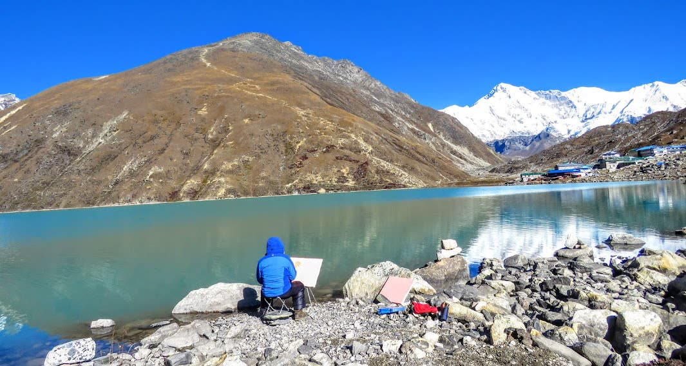
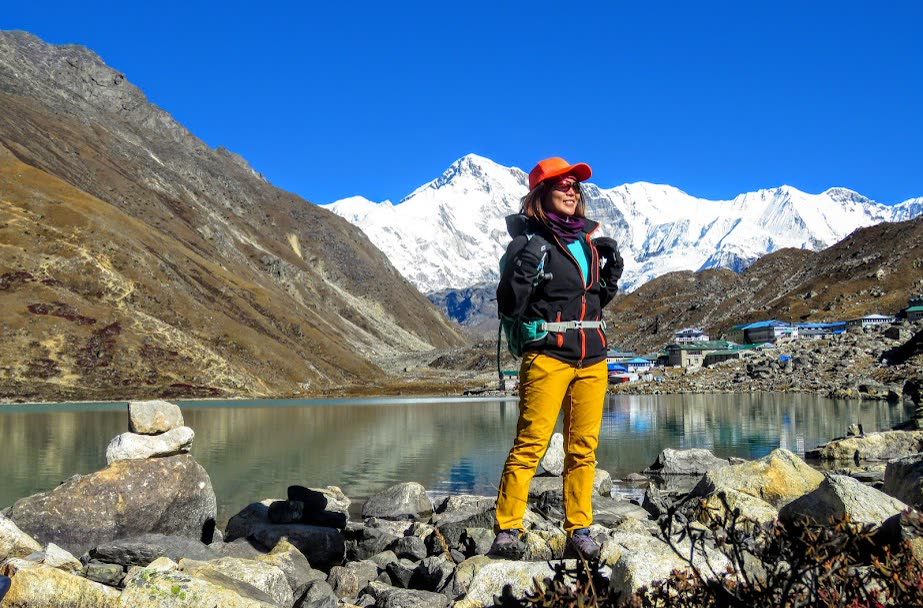
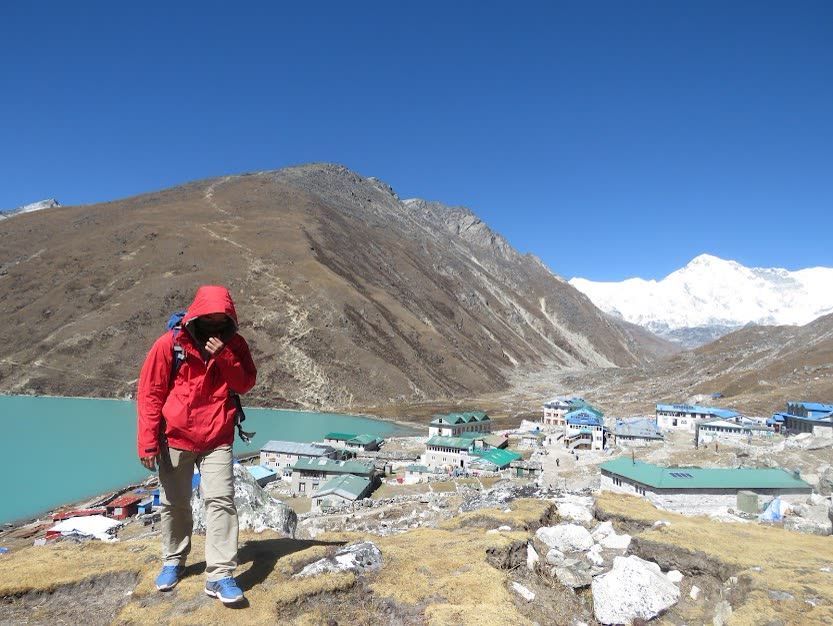
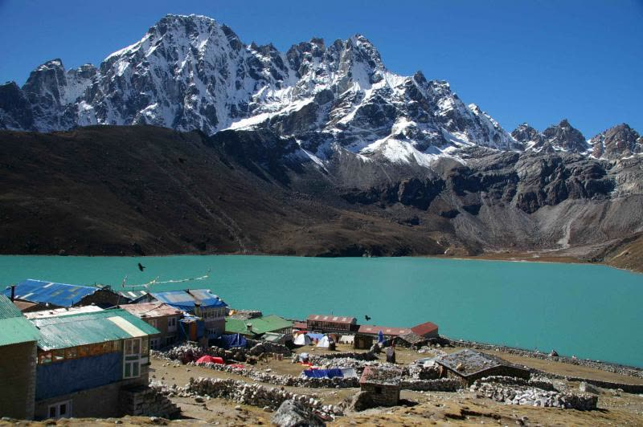
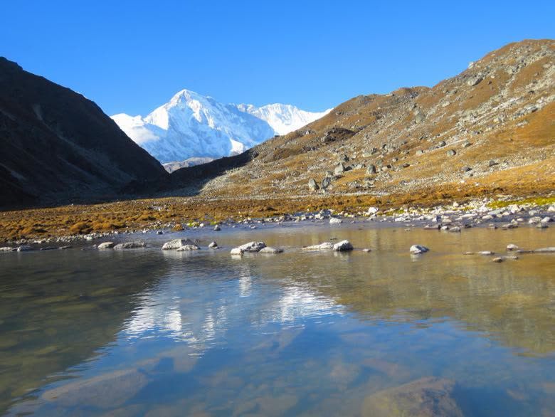
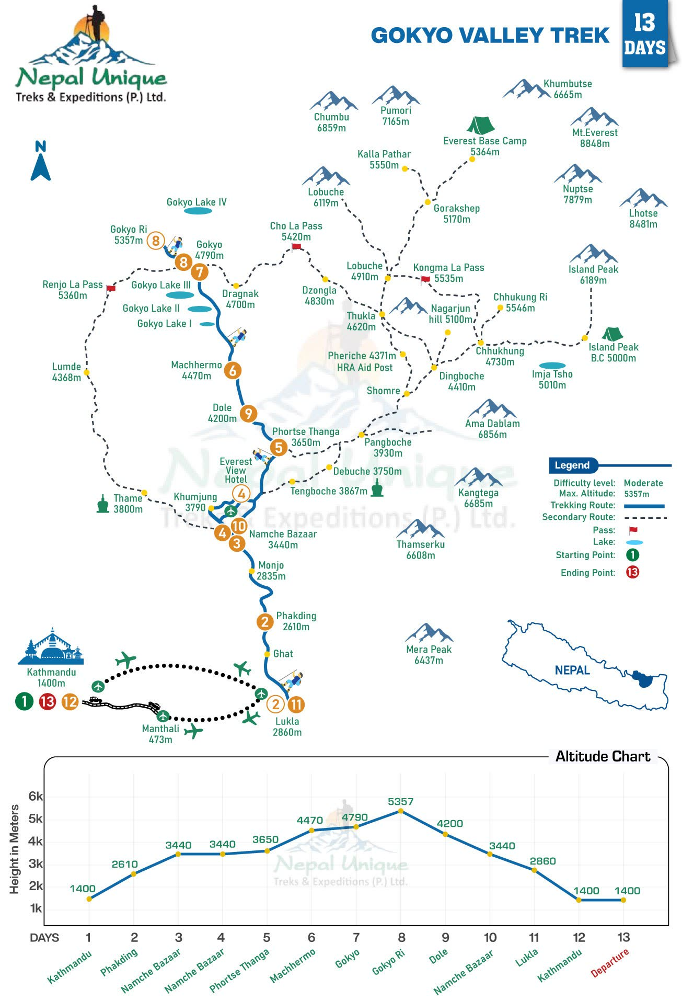

Gokyo Valley Trek
Not everyone can reach the peak of Mt. However, trekkers continuously search for the closest uninterrupted views of Mt.





Key Trip Facts
Trek Overview
Trip Highlights
Gokyo Valley Trek Overview
Not everyone can reach the peak of Mt. Everest. However, trekkers continuously search for the closest uninterrupted views of Mt. Everest. With the Gokyo Valley Trek, you can get a chance to experience the tallest mountain peak in the world very closely. Additionally, you can explore the five lakes around the Gokyo Valley system and hike to the amazing Gokyo Ri.
The 13-day Gokyo Valley Trek begins with a flight to Lukla Airport, the Gateway To The Everest. Traversing through the trail and acclimatizing at a few places, the trail takes us to the Gokyo Village. Throughout this trek, you will be walking far away from all the hustle and bustle, enjoying the peaceful environment. Moreover, the interactions with locals, amazing views, and meals all along the way make the Gokyo Valley trek even more worthwhile. Furthermore, exploring the lakes with the stunning view of the Gokyo Ri, and passing through Renjo La Pass, we retrace our way back to Lukla and fly back to the capital.
During the ascent, trekkers can also explore the flora and fauna along the trail while enjoying the beautiful views of the mountain peaks and the landscapes. Many trekkers categorize the Gokyo Valley trail as an interesting trekking trail in the Everest Region Trekking. That is because of the mesmerizing views one can see on the path. However, let us tell you that the trail can sometimes be challenging as well. Nevertheless, with all the hurdles aside, the destination will always be rewarding at the end of the day.
Please go through the entire details of the Gokyo Valley Trek to understand more about the trail and opportunities.
Why choose us for this Trek?
Planning and organizing multiple adventure trips all over Nepal is what Nepal Unique Treks has been providing for the last two decades. In our journey, we are honored to have highly skilled team members who have helped trekkers in their dream destinations. Moreover, the guides we have in the team are government license holders and have been in this sector for over a decade.
We are not just limited to providing services Trekking in Nepal. We also plan and organize trips to Bhutan and Tibet. Initially, we plan and organize the journey; however, you can customize it according to your preferences. Below is some additional information on why we are the perfect choice for the Gokyo Lake Trek:
The experience, information, and knowledge regarding the locals and the mountains of our guides will help you have a smooth trekking experience with all the safety precautions.
Prioritizing the best experience in the entire journey, we ensure to provide you with the best services in every meal served and place accommodated.
Skilled and experienced guides will help you from the very beginning of the trek, ensuring a better journey.
Permits required for Gokyo Lake Trek
In Nepal, we require a permit to enter the protected areas of certain regions. These permits are crucial as they are verified by the local officers at the checkpoints. Only then are we allowed to pass through those areas. The permits required are:
- Sagarmatha National Park Entry Permit
- Khumbu Pasang Lhamu Municipality Entry Permit
- Trekker's Information Management System (TIMS) Permit
You need the first permit to enter Sagarmatha National Park en route and the second permit to access the Khumbu region. Without these permits, you cannot pass through those areas.
TIMS Permit is a special type of permit that helps the government official track the trekkers, ensuring their safety and well-being.
In Nepal Unique Treks, we help you to get these permits without any hassle. Let us streamline the process for getting these permits while you prepare for the trek.
Why is insurance necessary for the Gokyo Lake Trek?
You might be wondering if Insurance is necessary for trekking. Then let me remind you that insurance can be much more helpful in case of any sort of emergency. Trekking in high altitudes can be tricky, as the weather conditions can change drastically. These sudden changes can lead to some emergency cases. In these critical conditions, the insurance comes in handy.
There are different kinds of insurance you can get before starting this journey. Some of them provide medical coverage, emergency evacuation, cancellation insurance, and many more. However, we highly recommend you take the insurance package that covers all of these.
Spring and autumn seasons are much more favorable for trekking, and we will also be scheduling our treks in these seasons. However, there is always a possibility of some changes in the weather. Only a simple change in weather can disrupt our trek and can lead to other emergencies as well. Therefore, to ensure things go smoothly even in emergency cases, we recommend you get the full package of insurance.
Furthermore, our guides will always be there to assist and navigate you even in emergency cases. This way, we can ensure you have a great journey with all the safety precautions.
Gokyo Valley Trek Itinerary: Day by Day
14 Days program for Gokyo Valley Trek. Daily timings and sequences remain flexible according to weather, flight operations, and group pace.
Day 1: Arrival at the Tribhuwan International Airport (Kathmandu) and Transfer to the Hotel
Approx. 1,345 m / 4,413 ft
On the first day, as you arrive at the Tribhuwan International Airport, Kathmandu, you will meet the representatives from Nepal Unique Treks. They will greet you with Khadas and bouquets before taking you to the hotel in a private vehicle. As you check in at the hotel, you will welcomed with a welcome drink. After that, we recommend the trekkers go for a quick refreshment before strolling around the nearby areas. You can check out some cafes, restaurants, and even spas around the hotel areas. Moreover, if you feel like you need some massage to prepare your body for the trek, you can also visit any massage parlors around. In the evening, we request the trekkers to join us for the welcome dinner arranged by the Nepal Unique Treks team. At the dinner, the professional guides will also describe to you the entire Gokyo Valley Trekking map. After that, you can go to sleep in your respective hotel rooms.
Day 2: Kathmandu to Ramechhap by drive and fly to Lukla (2860 meters) and trek to Phakding or Manzo (2610 meters)
Approx. 2,610 m / 8,563 ft
Without any delay, we will start the journey towards the Gokyo Valley immediately on the second day. As you wake up and have breakfast in the hotel, our guides will pick you up in a private vehicle. From there, we will drive to Ramechhap. It takes approximately 5 hours to reach Ramechhap from Kathmandu. This will be one of the most scenic drives in Nepal as you drive on a well-pitched road. However, in some places, the roads might not be as expected. As the drive concludes in Ramechhap, our guides will take you to the Airport. From there, it will be an amazing flight towards Tenzing and Hilary Airport (Lukla). If you get the window seat, you will be offered amazing aerial views of different mountains, valleys, and settlements. Within the next 25 minutes, you will land in the Tenzing & Hilary Airport. Our journey for the day does not end here. As you reach Lukla and meet the guides from Nepal Unique Treks, they will prepare you for a hike to Phakding (Manzo). It takes about 3/4 hours to hike from Lukla to Phakding. There, you can check in at the hotel and go for a proper rest for the day.
Day 3: Trek to Namche Bazaar (3,444 meters) from Phakding -6 to 7 hours
Approx. 3,440 m / 11,286 ft
From Phakding, the Gokyo Valley Trekking trail continues on the EBC Trail. So, we will be heading towards Namche Bazaar. This incredible journey to the heaven of Sherpa settlement requires you to walk past several waterfalls, settlements, and domestic farms, on a comparatively maintained route. One of the best things you will do on this day's journey is to pass the Dudh Koshi River over the Hilary suspension bridge. Besides, this section of the Gokyo Valley Trekking trail also offers outstanding views of different Himalayas, which include Kusum Kanguru, Thamserku, and many other summits. As we walk for about 6 to 7 hours from Phakding, we will reach one of the most developed towns of the entire Khumbu region located at an altitude of 3444 meters above sea level. Moreover, did you know that Namche Bazaar is also known as the trading hub of Nepal as most of the trading between Nepal and other countries takes place from Namche Bazaar? As you reach Namche, you will witness a lot of colorful houses, and terraced hillsides, hidden among the clouds. Take your time to stroll around the town, interact with the locals, and indulge in the delicacies of locally prepared food. After that, you can return to the hotel and sleep.
Day 4: Acclimatization (Rest) Day at Namche Bazaar (Hike to Everest View Hotel - 3880 meters)
Approx. 3,440 m / 11,286 ft
After three days of trekking through the rugged landscapes of the Khumbu region, the fourth day is a crucial acclimatization day in Namche Bazaar (3,440m). Even though this day is labeled as a "rest day", we will not stay idle on this day at all. Instead, we will spend the day hiking to higher altitudes and returning to lower elevations to help the body adapt to the thinning air. As a part of this hike, the guides will take you on a quick hike to the Everest View Hotel. The Everest View Hotel is a perfect location to get eye-soothing views of several mountains; especially Mount Everest. We will go for the hike to Everest View Hotel after the trekkers have breakfast in the hotel. It takes about 2 hours for any average trekker to reach the hotel from Namche Bazaar. The trail gradually ascends through pine forests, rhododendron bushes, and yak pastures, leading to the Syangboche Airstrip (3,780m). From here, the path continues towards Khumjung village, home to the legendary Yeti Skull Monastery and the Hillary School, built by Sir Edmund Hillary’s Himalayan Trust. As we ascend further, the Everest View Hotel welcomes us with awe-inspiring 360-degree views of Mount Everest (8,848m), Lhotse (8,516m), Ama Dablam (6,812m), Thamserku (6,608m), and Kongde Ri (6,187m). As you reach the Everest View Hotel, have some coffee or tea, and capture some ever-lasting memories, the guides will take you back to Namche Bazaar. You can explore around the town for the rest of the day before heading to the hotel for dinner and an overnight stay.
Day 5: Trek from Namche Bazaar to Phortse Thanga (3650 meters) - 5 to 6 hours
Approx. 3,660 m / 12,008 ft
After a refreshing acclimatization day at Namche Bazaar, the trail takes us off the beaten path towards the peaceful village of Phortse Thanga (3,680m). This route is less crowded than the classic Everest Base Camp trail, offering stunning Himalayan vistas, diverse landscapes, and a chance to spot rare wildlife. The trek to Phortse Thanga begins immediately after breakfast. As we begin the trail, we need to go for a gentle ascend until Mong La (3975 meters). From here, the trail separates from the Everest Base Camp Trekking trail and we move towards the Gokyo Valley Trekking trail. As you keep your legs moving slowly and steadily, the trail leads us to a beautiful riverside village between the towering peaks. This village is comparatively untouched with just a handful of tea houses. Moreover, you will also get to see some yaks grazing, and a unique lifestyle being practiced. Talking about this section of the Gokyo Valley Trekking route is comparatively very quieter than the classic EBC Trail. Besides, you can also witness the landscape transform into a mix of pine forests, rhododendron bushes, and scattered stone houses. Before reaching Phortse Thanga, we will pass through two other villages; Sanasa and Mong La. On your way to Mong La, the trekkers might also spot Himalayan Monals and even musk deer. In Mong La, the trekkers will rest for a while and have lunch before taking the final ascend to Phortse Thanga. Overnight stay will be arranged in a Sherpa lodge at Phortse Thanga after having dinner.
Day 6: Ascend to Machhermo (4,470 meters) from Phortse Thanga - 4 to 5 hours
Approx. 4,470 m / 14,665 ft
As the trekkers wake up and enjoy a delicious breakfast in the hotel, our journey on the Gokyo Valley Trekking map continues. From there, we will be on a 4 to 5-hour hike that leads to a maximum altitude of 4,470 meters above sea level. We will have to navigate through lush rhododendron and juniper forests while you will also be sensing the crisp and cool mountain breeze. Furthermore, you will also witness Himalayan Tahrs and yaks grazing over the green pasture lands. After a few hours of steady climbing, we reach Dole (4,200m), a small Sherpa settlement offering a perfect rest stop. With Cho Oyu (8,188m), Thamserku (6,608m), and Kangtega (6,782m) towering in the distance. From Dole, the route transits into a gentle ascent taking us through ridges and alpine meadows. After about 4 to 5 hours of quiet, peaceful, and adventurous walking, we will finally reach Machhermo, a beautiful village surrounded by sky-touching peaks on all sides. Well, let us tell you that locals at Machhermo have also reported the legendary tale of the first-ever Yeti sighting. As we reach the destination, we will check in at the hotel, take some time to stroll around the village, and then go for dinner and overnight stay.
Day 7: Ascend to Gokyo (4,790 meters) from Machhermo - 4 to 5 hours
Approx. 4,790 m / 15,715 ft
Another day, another trail, and another achievement to unlock as we leave Machhermo and walk towards Gokyo. As we start the trail, it climbs steadily following the icy waters of the Dudh Koshi River, with the imposing Cho Oyu (8,188m) dominating the skyline. The trekkers can sense the air getting thinner as they achieve higher altitude. Moreover, as we are currently above the altitude of 4000 meters, there is a higher risk of altitude sickness. Therefore, we also recommend that trekkers keep a slow pace, stay hydrated, and hike with all caution. Crossing small wooden bridges and rocky moraines, we soon arrive at the first of the Gokyo Lakes, shimmering in shades of turquoise against the rugged backdrop. From there, we will have to go for a final push which takes us to the tranquil village of Gokyo, located at an altitude of 4790 meters above sea level. Besides, the village is also nestled beside the third and largest Gokyo Lake (Dudh Pokhari), which offers an amazing view of the glacial lake, reflecting the sky-touching peaks. All these scenes and scenarios make this section of the Gokyo Valley Trekking trial completely worth the difficult ascend. If you have extra energy left after checking in at the hotel, we recommend you go for a short walk to the lake's edge. Here, you can witness a breathtaking sunset view over Ngozumpa glacier, the largest glacier in the Nepali Himalayas. After that, you can return to the hotel and go for a sound rest after enjoying a delicious dinner.
Day 8: Quick Hike to Gokyo Ri (5,357 meters) and Back to Gokyo - 3 to 4 hours
Approx. 5,357 m / 17,575 ft
On the eighth day of the Gokyo Valley Trekking package, we hike up to the Gokyo Ri, the highest point of the entire trekking route. Gokyo Ri is one of the most spectacular viewpoints in the entire Everest region. This viewpoint is located at an altitude of 5357 meters above sea level and offers some spectacular views of the surrounding valleys and mountains. However, there is something else that we will be spectating from the Gokyo Ri viewpoint. Yes, we will go for an early sunrise view hike to Gokyo Ri. The hike from Gokyo to Gokyo Ri takes about 2 to 3 hours and it takes about 1.5 hours to descend back to Gokyo. As it is an early morning hike, we recommend the trekkers strictly carry a headlamp and trekking pole. Moreover, you must also not leave the track led by the guide from Nepal Unique Treks and Expedition at all. From the top of Gokyo Ri, we can get a clear view of the Ngozumpa Glacier, along with different Himalayas, valleys, and lakes.
Day 9: Descend from Gokyo to Dole (4,200 meters) - 5 to 6 hours
Approx. 4,200 m / 13,780 ft
After witnessing the breathtaking beauty of Gokyo and Gokyo Ri, we begin our descent on the Gokyo Valley Trekking trail. On that journey, Dole will be our destination for the ninth day. It takes about 5 to 6 hours for us to walk from Gokyo to Dole (4200 meters). The journey back follows the familiar trail but with new perspectives of the towering peaks and glacial landscapes we had previously ascended. Besides, the trekkers can also witness stunning views of Cho Oyu (8,188m) and the Ngozumpa Glacier on this day as well. Passing through Machhermo and Luza, we descend into the greener landscapes of the valley. Here the trekkers can again watch yak pastures, prayer, and flags while walking past small Sherpa villages and settlements. As we lose some altitude, we will also sense the thickening of air and increment in the amount of oxygen in the air that we breathe. We will reach Dole in the late afternoon. After that, you can check in at the hotel and go for a sound rest after dinner.
Day 10: Walk from Dole to Namche Bazaar (3,444 meters) via Khumjung Village (3,790 meters) - 5 to 6 hours
Approx. 3,440 m / 11,286 ft
As this is a descending trail, we will try to cover a little more distance every day. Due to that reason, we will cover an approximate distance of 11 kilometers on the tenth day. As you wake up and have breakfast in the hotel, our guides will lead you on a scenic trail through lush rhododendrons and pine forests. As we make our way down, the high-altitude barren landscapes gradually give way to greener pastures and terraced hills, where yak herders and local Sherpas go about their daily routines. After a short and steady descent, we will reach the first checkpoint of the day, Mong La (3975 meters). A little rest here and then we continue towards the Khumjung village (3790 meters). This village, one of the largest Sherpa villages in the Everest region, is known for its rich cultural heritage. As we reach here, the guides will take you for a quick visit to the famous Khumjung Monastery, where we can see a legendary Yeti scalp. Furthermore, we also take time to visit the Hilary School. After that, we go for the last part of today's descent, which leads us to Namche Bazaar. Finally, after such a tiring walk to the Gokyo Ri and back, you will get a chance to stay in a town with many facilities. Check-in at the hotel before you stroll around the town and try some delicacies like yak cheese and bakery items. After that, you can head back to the hotel for dinner and a comfortable sleep.
Day 11: Descend to Lukla (2860 meters) from Namche Bazaar - 6 to 7 hours
Approx. 2,860 m / 9,383 ft
Today, the trekkers will have to cover an approximate distance of about 18 kilometers. Well, it might sound too hectic but believe us, it only takes 6 to 7 hours to cover this distance. As we are on a descending journey on the Gokyo Valley Trekking trail, even the longest distance can be covered in a short time. The trail to Lukla goes through dense pine and rhododendron forests, passing by small Sherpa settlements and Mani stone walls adorned with Buddhist prayers. Before reaching Lukla, we will also stop at another smaller settlement named Phakding. As we leave Phakding, the trail transits into a gentle ascend to Lukla. Upon reaching Lukla and marking an end to the walking journey in the Gokyo Valley Trekking package, we will check in at the hotel and take some rest. You can utilize the rest of the day by exploring the village or just resting with the views from the hotel. In the evening, we will have the last dinner in the Khumbu region and sleep for the night.
Day 12: Flight to Ramechhap from Lukla (20 minutes), then drive to Kathmandu (5 hours)
Approx. 1,345 m / 4,413 ft
On the 12th day, the journey begins backtracking the trails to Namche. The trek starts getting easier as we keep moving down to the lower altitude. The walk is relatively long and we stay overnight at Namche.
Day 13: Final Day of the Gokyo Valley Trekking Package
Approx. 1,345 m / 4,413 ft
What we do on this day depends completely on your schedule. If you are traveling back to your home country, our guides will take you to the international Airport in a private vehicle. However, if you want to stay back in Nepal and go for some other tours and hikes, you can book those with us as well. The Nepal Unique Treks team will be more than happy to serve you with adventure and insights. However, one thing that happened on this day is that we officially put an end to the 13-Day Gokyo Valley Trek.
Day 14:
Everest
What is Included (Regular Package)
What is Excluded
Booking Dates & Availability
Packing List for Gokyo Valley Trek
Essential Info: Down jackets and sleeping bags can be rented/arranged per package inclusions.High-Altitude Trail Gear (6 items)
Cold-Weather Layering System (5 items)
Sleep, Health & Permits (3 items)
Read before you book: Gokyo Valley Trek
Practical logistics derived directly from this package's route facts, inclusions, and elevation profile.
Accommodation & Meals (Hotel - Lodge - Tea House)
Accommodation follows the package grade (Hotel - Lodge - Tea House) in Kathmandu and along the Everest route. Check your package Includes section for included meals and Kathmandu hotel nights.
Permits & Local Logistics
Transportation is arranged via Flight, Private Car. Applicable permits listed in the package inclusions are arranged by Nepal Unique Treks prior to departure.
Route Difficulty & Elevation ((5357 m/17,570 ft))
Gokyo Valley Trek is rated Moderate with a maximum elevation of (5357 m/17,570 ft). Follow your guide's pacing and stay hydrated throughout the 14 Days itinerary.
Best Time to Visit (March, April and May (Spring). October, November and December (Autumn))
Recommended operating season on the source page: March, April and May (Spring). October, November and December (Autumn). Additional official notes from the source page follow below.
Traveller Useful Information
A journey consisting of exploring the 5 sacred lakes in the Gokyo with absolutely stunning trails and views. Also, explore the Eight Thousanders from the Gokyo Ri.
A flight from the capital to the Gateway To The Everest, Lukla Airport. The aerial view of the landscapes, rivers, lush hills,s and mountain peaks will mesmerize your eyes.
Indulge yourself in experiencing the lifestyle of the locals of Sherpas and Tibetans. Also, get to explore the local cuisine of the community.
The journey to Gokyo is challenging, but the stunning views of Mt. Everest and the entire Khumbu Region will make you forget all the hardships of the trek.
Gokyo Ri is another best viewpoints in the Everest Region. A great panoramic view of the mountain peaks above with lakes and glaciers below.
For a meal, we can expect anything from local cuisine to Western and Tibetan cuisine. Similarly, for the accommodation, we will be staying at teashops at higher altitudes, while at lower altitudes there are multiple lodges. But, from every point in the journey, we will have the best view when we have our meal.
The overall trek is considered a bit challenging but is rewarding as well. Gokyo Lake Trek can be categorized as Moderate level with few hurdles on the trail. However, it depends on the trekkers as well. If you haven't done any trekking before, then you might feel harder comparatively. Nevertheless, with proper physical condition, diet, and rest, anyone can complete this journey.
First and foremost, the altitude can be a challenge for us. The highest point we will reach on this trek is Gokyo Ri at 5,483 meters. At such altitudes, there is a constant risk of altitude sickness. To minimize the potential harm, we acclimatize properly, which is why Nepal Unique Treks expert trek guides have designed the itinerary to include rest days at strategic points, ensuring your body adjusts gradually.
Secondly, the trail is going to be challenging in certain portions with numerous ups and downs, narrow paths, rocky stretches, and boulder-filled routes. Also, we will be trekking on these trails for 5 to 7 hours daily, which is physically demanding. Therefore, it is necessary to be physically fit. For this, we need to do prior workout to maintain the consistency in our body.
Moreover, Nepal Unique Treks expert guides will be with you every step of the way. They are experienced, licensed guides who will monitor your progress and ensure your safety throughout the trek. Their guidance and support will help you navigate the challenges with confidence.
The moment you land at Tribhuvan International Airport (TIA), we take care of all the transportation till the very end of the journey. A private commute will come to pick you up from the airport and escort you to the hotel. Now comes the adventurous flight to the Lukla airport. We will take care of this connecting flight from Kathmandu to Lukla Airport for you.
However, if you choose to take a flight from Ramechhap, then we will arrange a bus to travel from Kathmandu to Ramechhap. Furthermore, to enhance your experience we provide a luxurious bus for travel. This way you comfortably reach your destination.
One of the things that needs to be considered is that the flight to Lukla can get canceled. This is mainly due to harsh weather conditions up in the hills. So, you have to accommodate for the day and we will make sure you have the next flight for tomorrow. Also, we have the option to reach Lukla on the same day via Helicopter ride. For 5 people this costs nearly $3,000 from Kathmandu to Lukla.
Helicopter Flights can be much more convenient as you won't have to wait for normal planes. The flight will take off on time. In addition, the breathtaking views from the flight you get are beyond imagination. Hence, if you wish to book a flight to Lukla via Helicopter, we will arrange it for you hassle-free.
Spring and Autumn seasons are considered more favorable for trekking in Nepal as there is less chance of sudden weather changes daily. Also, we get to experience the stunning views of the Himalayas, the traditional culture of the people in high regions, and a more comfortable compared to other seasons.
Spring Season (March to May)
It is one of the most preferable seasons for the Gokyo Lake Trek. The weather conditions are favorable with moderate temperature, skies are clear along with the dry trails making it easier for overall trekking. Moreover, the wildflowers start to bloom and we get to see lush hills and rhododendrons along the way making the path more beautiful. With the clear sky, the visibility of the mountain peaks like Everest, Cho Oyu, and Makalu is also high.
Autumn Season (September to November)
Similar to the spring season, the weather is consistent with fewer chances of extreme weather conditions in the Autumn Season as well. Additionally, the sky is also clear during the daytime with few clouds in the afternoon allowing us to get clear views along the route of the surroundings. Moreover, in this season, the leaves start to change their colors and the flowers also start to fall. The fallen leaves and the flowers create a beautiful carpet of orange foliage en route.
After a tiring trek during the time, a portion of good food and and comfortable stay is what we look forward to. A good meal will help us in restoring all the energy and a good sleep will allow our body to rest and be prepared for the next. Keeping this in mind the guides of Nepal Unique Treks will help you in finding the best accommodation in the area with a great place to dine in.
Throughout the trail, we will find multiple tea houses and lodges that will provide lunch, breakfast, and dinner. The variety of the foods available during the initial phase of the trek is much more. We can get local foods like dal, bhat, and momo to Western foods like pizza, pasta, and many more. However, as we ascend there are fewer options available but has enough energy to keep on moving on our further journey.
Similarly, for the accommodation, we will find multiple options from simple basic rooms to luxurious rooms during the initial section of our trek. But as we move ahead the options are lesser providing the basic amenities. For most of the days, we will be accommodating in the tea house. They are affordable and are the best value for money with the amenities they provide.
Altitude Sickness is common as we ascend more than 2,500 meters. It is a condition where our body doesn't adapt to the lower oxygen levels at higher altitudes. Every single one of us is different, so it can happen to us at different altitudes with dissimilar symptoms.
Some of the common symptoms include nausea, shortness of breath, headache, dizziness, and fatigue. Therefore, for our safety, it is crucial to understand and mitigate the risk of altitude sickness to have a safe and enjoyable journey.
Also known as Acute Mountain Sickness(AMS) can escalate into more serious conditions, like High Altitude Pulmonary Edema (HAPE) or High Altitude Cerebral Edema (HACE), both of which require immediate medical attention. However, with the right precautions you can minimize the risks. If there is any discomfort in the body then do inform your guides. They will assist you in further processes to minimize the effect.
To stay safe from altitude sickness, the best possible way is to acclimatize at different points in the trek. So for your safety, in this journey, we will be acclimatizing at a few places. This will help our body to adapt at higher altitudes where the level of oxygen is comparatively lower.
Additionally, staying hydrated by drinking 3-4 liters of water daily, eating a carbohydrate-rich diet, and using an oximeter to monitor oxygen levels are key steps in preventing AMS. If symptoms do arise, it’s important to listen to your body and descend to a lower altitude as soon as possible.
It is important to know what we require during the trek from the beginning. Also, as we proceed ahead in our journey, we don't get much of items in the local shops. So, keeping this in mind,d we have created a list of items that you require during this trek:
Waterproof Trekking Shoes
Thick Warm Woolen Socks
Trekking Trousers
Thermal T-shirt (Long Sleeves)
Down Jacket
Waterproof Jacket
Warm Waterproof Gloves
Headlight for Night or Sunrise Hike
High-Quality Trekking Poles
Day Backpack
Waterproof Bag
Thermal Water Bottle
First Aid Kit
Power Bank
Snacks (Energy Bars and Power Gel)
Trekking Trail Map
Mobile Phone and Power Bank for Mobile Charging
Padlock and Key for Safe Backpack
Sun protection cream, wet wipes, and hand sanitizer
Sleeping bags
Sunglasses, sun hat, or woolen cap
These items are not just tailored to Gokyo Lake Trek only. You can look up to these items, pack them, and go on any treks in Nepal.
Regarding the booking process for this journey, we have multiple options. You can directly message us on WhatsApp, Zalo, or Viber at +9779851023285. Also, you can email us at info@nepaluniquetreks.com or nepaluniquetreks@gmail.com. Moreover, we also customize the itinerary according to your requirements and make sure your trip goes according to your plan.
After you choose how you want to proceed with the itinerary, for the booking we require a 30% deposit to secure your spot. In addition, you can communicate with our team directly regarding payment methods.
Once your booking is confirmed, we will provide you with additional information to help you prepare for your trip. If you have any questions about the booking process, feel free to contact us anytime.
Altitude Profile of Gokyo Valley Trek
Weather on Gokyo Valley Trek
Gokyo Valley Trek Route Map

Book This Trek
Contact our Kathmandu coordinators using the booking panel for private or fixed-group departures.
Trip Feedback
Explore verified traveller stories or leave feedback on Nepal Unique Treks.
Visit Nepal Unique Treks